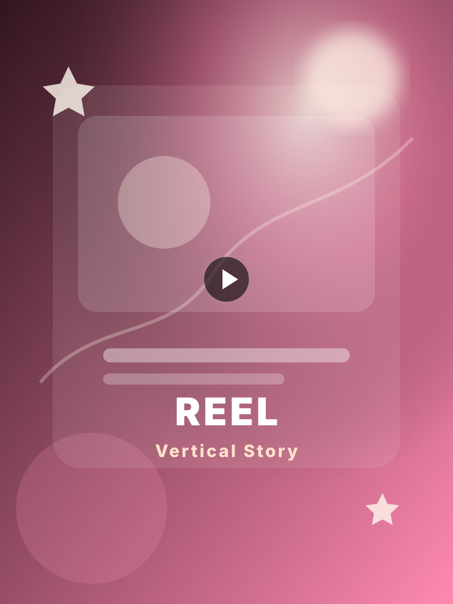
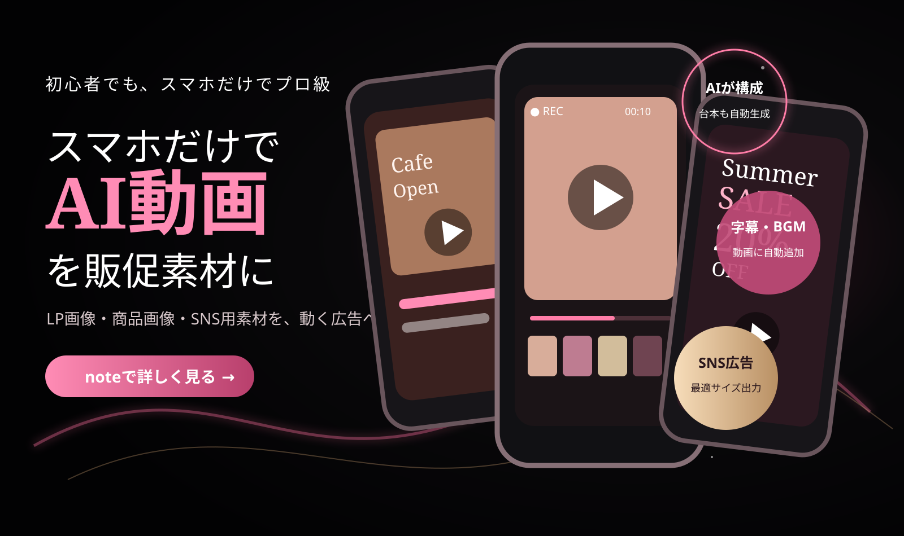
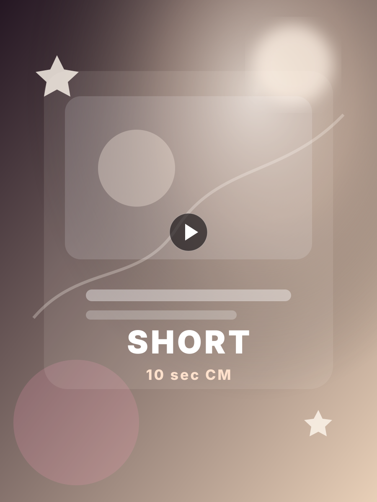
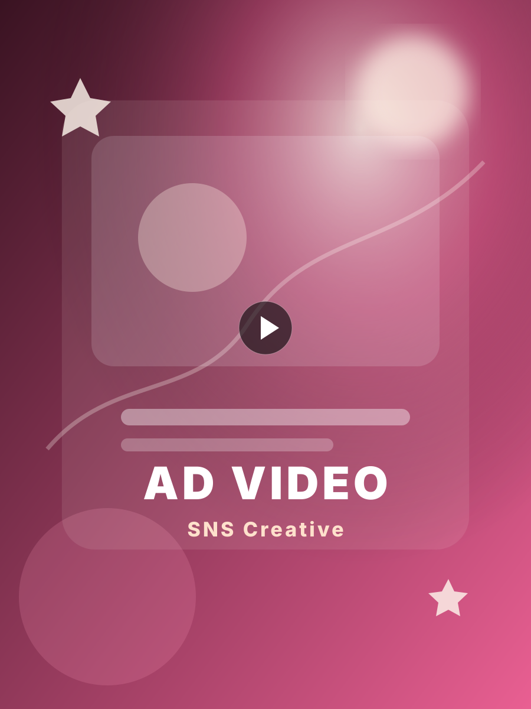
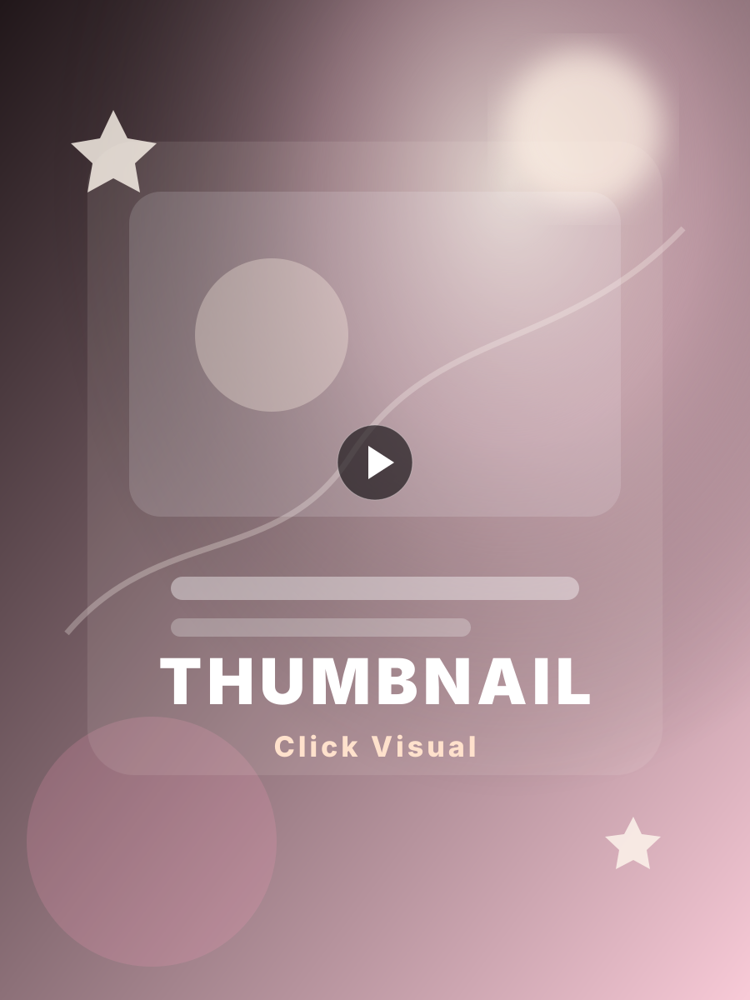
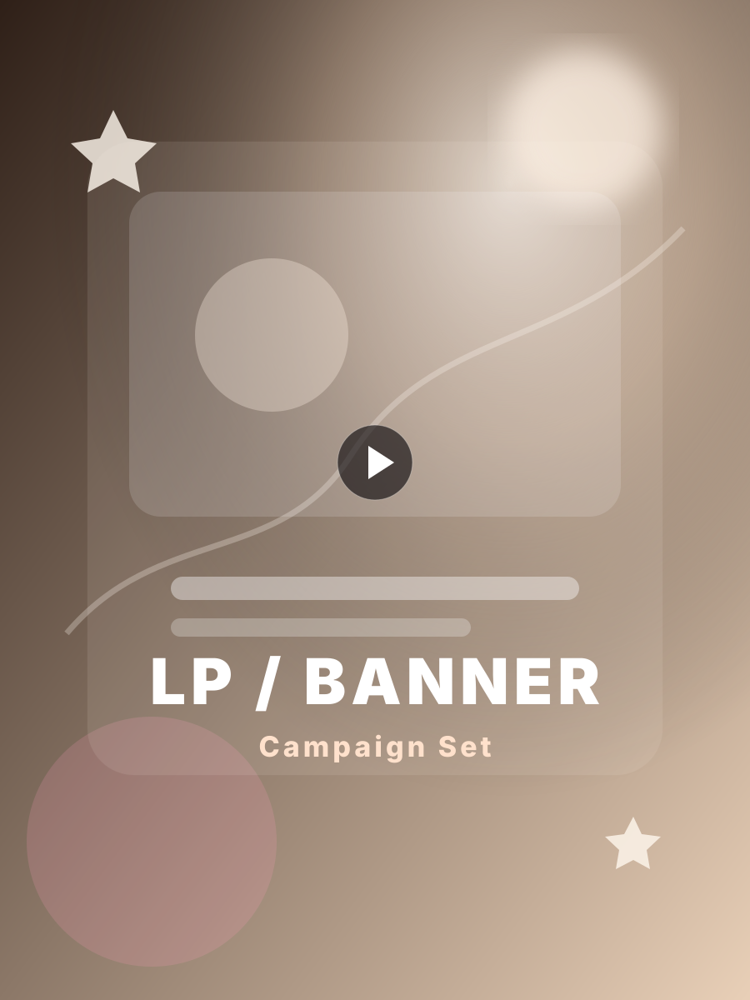

リール動画縦型で魅力を届ける
AI VIDEO MARKETING
画像1枚から、動く広告素材へ。
Canvaで作ったLP画像、商品画像、SNS投稿用の素材を、スマホだけでショート動画・リール・広告素材に変える実践ガイドです。難しい動画編集ではなく、AIに構成・動き・字幕の方向性を作ってもらう流れに絞って学べます。
WHAT YOU CAN MAKE
AI動画で作れる販促素材

ショート動画短尺で印象に残す
広告動画SNS広告に使いやすい
サムネイル画像目に止まる導線に
LP / バナー画像静止画を動く見せ方へWHY IT WORKS
スマホ×AIだから、販促素材づくりが速くなる。
構成をAIが提案
冒頭の引き、見せたいポイント、CTAまで流れを作りやすくします。
動画らしい見せ方に
再生ボタン、テロップ、タイムライン、Before→Afterで動画感を演出。
SNSへ展開しやすい
リール、ショート、広告、LP埋め込みに使える素材へ整えます。
初心者でも始めやすい
PC編集や専門ソフトに寄せず、スマホだけで進める導線にしています。
USE CASE
こんなシーンで使えます
3 STEP
作り方はシンプル
素材を選ぶ
LP画像、商品画像、Canva素材をスマホから準備。
AIで動画化
構成、動き、字幕、BGMの方向性をAIで作成。
投稿・導線に使う
SNS、note、LP内動画、広告素材として活用。
START GUIDE
スマホだけでAI動画を販促素材に変える方法
作例、プロンプト、動画化の流れ、SNSでの見せ方まで、初心者でもまねできる形でまとめた実践ガイドです。
noteで詳しく見る ※公開時にご自身のnote商品URLへ差し替えてください。